第6章
怎样求已知轨道上的运动
命题30 问题22
求沿抛物线运动的物体在任意给定时刻的位置。
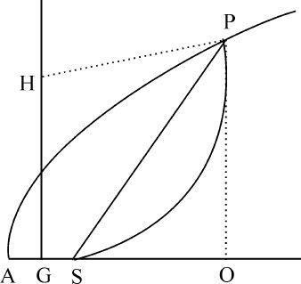
令S为抛物线的焦点，A为其顶点；设4AS·M等于抛物线下被分割的部分APS的面积，它可以由半径SP在物体离开顶点后掠成，也可以是它到达那里之前的剩余。现在我们知道这块被分割的面积在数值上正比于时间。在G二等分AS，画垂线GH等于3M，以H为中心，HS为半径作一圆，与抛物线在所要求的点P相交。因为作PO垂直于主轴，作PH，则
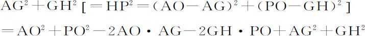
因而，
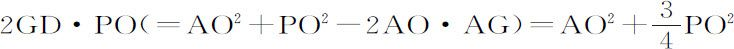
以
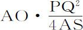
代替AO2 ，再把所有各项除以3PO，乘以2AS，得到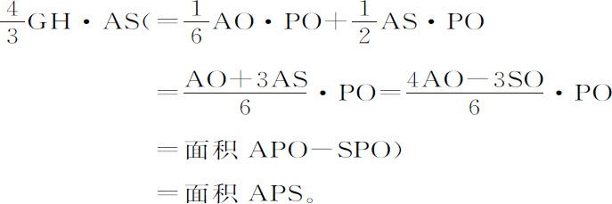
而GH等于3M，所以
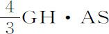
等于4AS·M。所以被分割的面积APS等于被分割的面积4AS·M。完毕。
推论Ⅰ．所以GH比AS等于物体掠过弧AP所用时间比物体掠过由顶点A到焦点S处主轴垂线所截一段弧所用时间。
推论Ⅱ．设圆APS连续地通过运动物体P，则物体在点H处速度比它在顶点A的速度为3比8；所以，直线GH比物体在相同时间内以在顶点A的速度由A运动到P所画直线也是这个比值。
推论Ⅲ．另一方面，也可以求出物体掠过任意给定弧长AP所用时间，连接AP，在其中点作垂线与直线GH相交于H即可。
引理28
一般地，以任意直线分割的卵形面积不能用求解任意多个有限项和元的方程的方法求出。
设在卵形内任意给定一点，以它为极点一条直线作连续匀速转动，同时在此直线上有一可动点以正比于卵形内直线长的平方的速度由极点向外运动。这样，该点的运动轨迹是匝数不定的螺旋线。如果该直线所分割的卵形面积可由有限方程求出，则正比于该面积的动点到极点的距离也可由同一方程确定，因而螺旋线上所有点也都可以由有限方程求出，所以位置已知的直线与该螺旋线的交点也可由有限方程求出。但每一条无限直线与螺旋线有无限多个交点，而决定这两条线某一交点的方程会在同时以同样无限多个根表示出所有的交点，因而产生与交点数相同的元。两个圆相交于两个交点，其中一个交点如果不用能决定另一个交点的二元方程就无法找到。两条圆锥曲线可以有四个交点，一般而言，如果不用能决定所有交点的四元方程，无法找出其中任何一个。因为，当分别去找这些交点时，由于所有的定律与条件都相同，使每次的计算也都相同，所以结果也总是相同，它必定是同时表达了所有交点，完全没有区别。所以，当圆锥曲线与三次曲线相交时，因为其交点多到六个，因而需要六元方程；而两条三次曲线相交点时，其交点多达九个，因而需用九元方程。若不是这样的话，则所有立体问题都可以简化为平面问题，而那些维数高于立体的问题也可以简化为立体问题了。但我在此讨论的曲线其幂次不能降低。因为表达曲线的方程幂次一旦降低，则曲线将不再是完整的曲线，而是由二条或更多条曲线的组合，它们的交点可以由不同的计算分别确定。出于相同的理由，直线与圆锥曲线的两个交点总需要二元方程求解；直线与不能化简的三次曲线的三个交点要由三元方程求出；直线与不能化简的四次曲线的四个交点需由四元方程求出。以此类推至于无限。所以，直线与螺旋线的无数个交点，由于螺旋线是简单曲线，不能简化为更多曲线，需要用元和根数都无限多的方程加以总体表达。因为所有的定律和条件都相同。因为，如果由极点作该相交线的垂线，且与相交直线一同关于极点旋转，则螺旋线的交点将相互间交替变换，第一个或最近的一个交点，在直线转过一周后变为第二个，转二周后变为第三个，以此类推：与此同时方程保持不变，只是决定相交直线位置的量的数值不断改变。所以，由于这些量在旋转一周后都回到其初始数值，方程又回到其初始形式；因而同一个方程可以表示所有交点，它有可以表示所有交点的无限多个根。所以，一般而言，一条直线与一条螺旋线的交点不能由有限方程来确定；所以，一般而言，被任意直线分割的卵形面积不能由这种方程来表示。
出于同样理由，如果描述螺旋线的极点与动点间距离正比于被切割卵形的边长，则可以证明，该边长一般不能用有限方程表达。但我在此讨论的卵形不与伸向无限远的共轭图形相切。
推论．由焦点到运动物体的半径来表示的椭圆面积，不能由有限方程给出的时间来确定，因而不能由在几何上有理的曲线作图求出。在此，说这些曲线在几何上有理，是指其所有的点都可以由方程求出长度后加以确定。其他曲线（如螺旋线，割圆曲线，摆线）我称之为几何上无理的，因为其长度是或不是数与数的比（根据欧几里得《几何原本》第十卷）在算术上称为有理的或无理的。所以，我用下述方法，以几何上无理的曲线分割正比于时间的椭圆面积。
命题31 问题23
找出在指定时刻沿已知椭圆运动的物体的处所。
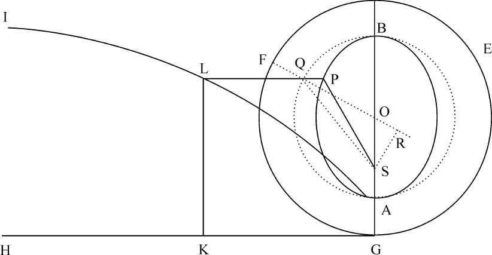
设A是椭圆APB顶点，S是焦点，O是中心；令P为所要找出的物体的处所。延长OA到G使得OG:OA＝OA:OS，作垂线GH；以O为中心，OG为半径作圆GEF；再以直线GH为底线，设圆轮GEF关于自己的轴在其上滚动，同时轮上的点A画出摆线ALI。然后取GK比轮的周长GEFG等于物体由A掠过弧AP所用的时间比它环绕椭圆一周所用时间。作垂线KL与摆线相交于L；再作LP平行KG，并与椭圆相交于P，即找出物体的处所。
因为，以O为中心，OA为半径画半圆AQB，如果必要的话，将LP延长到弧AQ于Q点，连接SQ，OQ，令OQ与弧EFG交于F，在OQ上作垂线SR。面积APS正比于面积AQS变化，即，正比于扇形OQA与三角形OQS的差，或正比于乘积
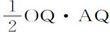
与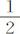
OQ·SR的差，即，因为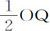
是已知的，正比于弧AQ与直线SR的差；所以（因为已知比值SR比弧AQ的正弦，OS比OA，OA比OG，AQ比GF，以及相除后AQ－SR比GF－弧AQ的正弦都是相等的）正比于弧GF与弧AQ的正弦的差。完毕。
附注
然而由于画出这条曲线很困难，用近似求解更为可取。首先，找出一个角B，它与半径的张角57.29578度角的比，等于焦距SH比椭圆直径AB。其次，找出一个长度L，使它半径的比等于上述比值的倒数。求出这些后，问题可以由下述分析解决。通过任意作图（甚至猜想），设我们知道物体的处所P靠近其真实处所P。然后在椭圆的轴上作纵坐标PR，由椭圆直径的比例，可以求出外切圆AQB的纵坐标RQ；设AO是半径，并与椭圆相交于P，则该纵坐标是角AOQ的正弦。这个角既使用接近于真实的数字粗略计算也已足够。设我们还知道该角正比于时间，即它与四个直角的比等于物体掠过弧Ap 所用时间与环绕椭圆一周所用时间的比。令该角为N，再取角D，它与角B的比等于角AOQ的正弦比半径；取角E，使它比角N－AOQ＋D等于长度L比同一长度L减去角AOQ的余弦，当该角小于直角时，或加上该余弦，在它大于直角时。下一步，取角F使它比角B等于角AOQ＋E的正弦比半径；取角G，使它比角N－AOQ－E＋F等于长度L比同一长度L减去角AOQ＋E的余弦，当该角小于直角时，或加上该余弦，当它大于直角时。第三步，取角H，它与角B的比等于角AOQ＋E＋G的正弦比半径；取角I，它与角N－AOQ－E－G＋H的比，等于长度L比同一长度L减去角AOQ＋E＋G的余弦，当该角小于直角时，或加上该角的余弦，当它大于直角时，反复运用这一方法至于无限。最后，取角AOq 等于角AOQ＋E＋G＋I＋，等等，由其余弦Or 与纵坐标Pr （它与其正弦qr 的比等于椭圆的短轴与长轴的比），即可得到物体的正确处所p 。当角N－AOQ＋D为负时，角E前的＋号都应改为－，而－号都应改为＋。当角N－AOQ－E＋F以及角N－AOQ－E－G＋H为负时，角G和I前的符号都应作相同变化。但无限系列AOQ＋E＋G＋I＋；等等，收敛如此之快，很少需要计算到第二项E之后。这种计算以这一定理为基础，即面积APS正比于弧AQ与由焦点S垂点作向半径OQ的直线的差而变化。
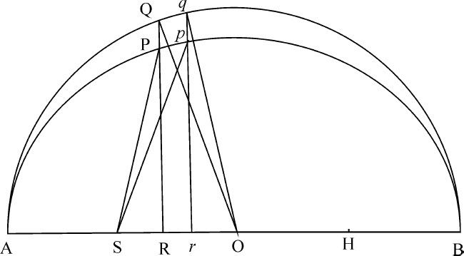
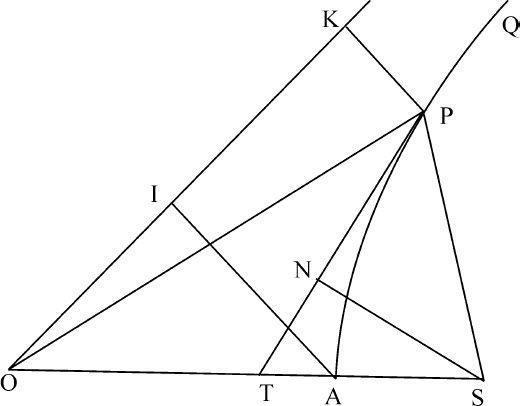
用大致相同的方法，可以解决双曲线中的同一问题。令其中心为O，顶点为A，焦点为S，渐近线为OK；设其正比于时间的被分割面积数值已知，令其为A，设我们知道分割面积APS近乎于真实的直线SP的位置。连接OP，由A和P向渐近线作平行于另一渐近线的直线AI，PK；由对数表可知面积AIKP，以及与之相等的面积OPA，后者被从三角形OPS中减去后将余下被切除的面积APS。将2APS－2A，或2A－2APS，被分割的面积A，与被切除的面积APS的差的二倍，除以由焦点S垂直作向切线TP的直线SN，即得到弦PQ的长度。该弦PQ内接于A和P之间，如果被切除的面积APS大于被分割的面积A；而在其他情形，它则指向点P的另一侧：则点Q是更精确的物体处所。重复这种计算即可以越来越高的精度求得该处所。
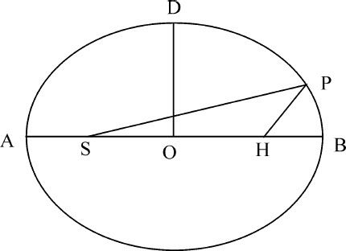
运用这种计算可得对这一问题的普适的分析解。不过下述特殊计算更适用于天文学目的。设AO，OB，OD为椭圆半轴，L为其通径，D为短半轴OD与通径的一半
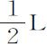
的差：找出一个角Y，其正弦比半径等于差D与二轴的和的一半AO＋OD的乘积，比长轴AB的平方。再找出另一角Z，其正弦半径等于焦距SH与差D的乘积的二倍，比半长度AO的平方的三倍。一旦找到这些角，就可以这样确定物体的处所：取角T正比于通过弧BP的时间，或等于所谓平均运动；取角V，第一平均运动均差，比角Y，最大第一均差，等于二倍角T的正弦比半径；取角X，第二均差，比角Z，第二最大均差，等于角T的正弦的立方比半径的立方。然后取角BHP，平均差运动，或是等于T＋X＋V，角T，V，X的和，如果角T小于直角；或是等于T＋X－V，这些角的差，如果角T大于一个直角而小于二个直角；而如果HP与椭圆相交于P，作SP，则它将分割面积BSP，近似正比于时间。这一方法看起来相当简捷，因为角V和X均为秒的若干分之一，是非常小的，随意求出其前二三位即足以敷用。类似地，它还以足够的精度解决行星运动理论问题。因为即使是火星轨道，其最大的中心均差达到10°，计算误差也很少超过1秒。而一旦平均运动差角BHP求出，真实运动角BSP，距离SP，也就易于用已知方法求出。
迄此讨论的是物体沿曲线的运动。但我们也会遇到运动物体沿直线上升或下落的情形，现在我继续讨论属于此类运动的问题。